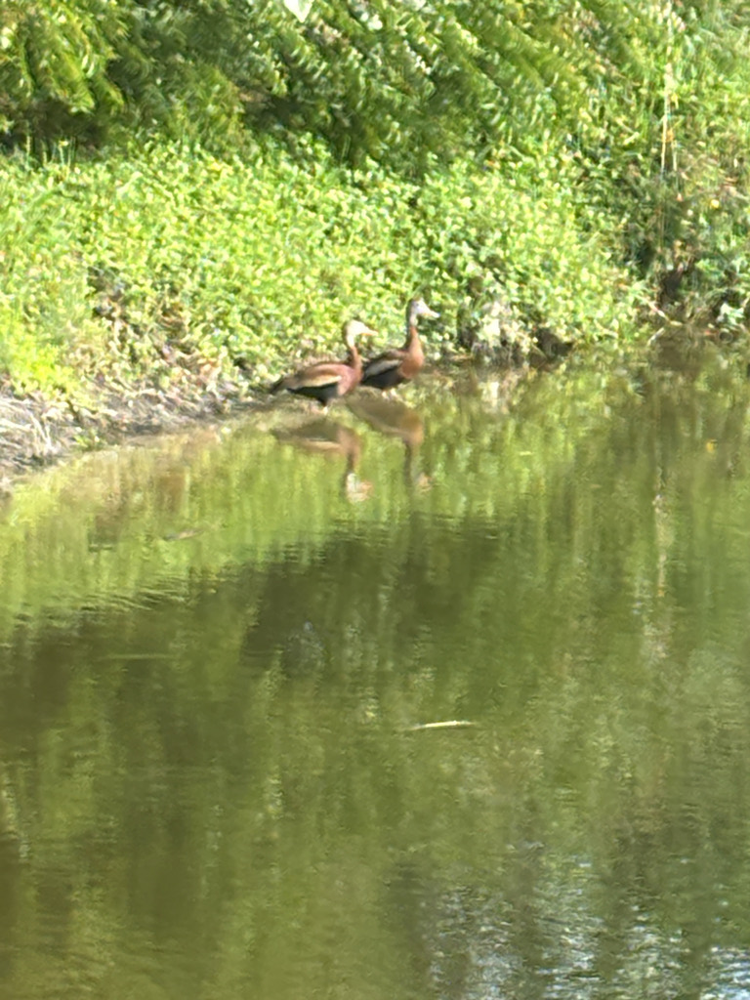

- Florida's entire population traces back to a single flock of eleven birds that wintered near Sarasota in 1981. The founding group is believed to have crossed the Gulf of Mexico from the Yucatan Peninsula. From that foothold, the species now breeds across virtually the entire state.
- The pink bill and legs are impossible to miss — no other duck in Florida combines that electric pink hardware with a chestnut body and jet-black belly. Males and females are identical in plumage, which is unusual for ducks and more typical of geese and swans.
- This species thinks nothing of perching in trees, on telephone lines, or along fence rails — habits that earned it an earlier name, the tree duck. The long legs that let it do this also give it an upright, almost goose-like stance on the ground.
- Both parents share incubation duties equally — a trait far more common in geese and swans than in ducks. They also form lifelong pair bonds, and the oldest banded individual on record lived at least ten years and seven months.
A large, long-legged, long-necked duck that stands more upright than most — roughly the size of a Cattle Egret. Length 18.5 to 21 inches; wingspan about 30 to 37 inches. The upright, goose-like posture is the first thing you notice.
Adults are rich chestnut-brown on the breast, back, and neck cap, with a jet-black belly and tail. The face and upper neck are pale gray, with a neat white eye-ring. Wings are dark with a bold white stripe formed by the secondary feathers — striking in flight, visible as a white band when the wings are folded.
Bright pink bill and long pink legs; these are the most instantly field-identifiable features at any distance. Males and females are identical in appearance.
Young birds are duller and browner overall, with a gray bill and pale legs and lack the sharply defined black belly of adults. The white wing stripe is still present and useful for identification.
Broad wings, long neck stretched forward, and long legs trailing behind the tail create a distinctive gangly silhouette unlike any other local waterfowl. The white wing patch flashes prominently, and the birds call almost continuously while airborne.
One of Florida's more audible waterbirds. The signature call is a high-pitched, multi-note whistle — often described as a clear waa-choo or a rapid series of peeping whistles — delivered on the wing and on the ground alike. Flocks in flight produce a continuous chorus that carries well and typically announces their presence before they come into sight. On the ground, birds maintain a running soft chatter of peeps and chirps among themselves.
Look for a large, upright duck with a pink bill and pink legs — nothing else in Florida combines those features. At rest, the chestnut breast and black belly are diagnostic; in flight, watch for the broad white wing stripe and the dangling pink legs extending beyond the short tail. Juveniles are duller but still show the white wing mark. The whistling call, heard constantly when flocks are moving, is often the first clue they are nearby.
Predominantly plant material — seeds of grasses, smartweed, sedges, amaranth, aquatic plants, and agricultural grains including sorghum, millet, corn, and rice. In shallow water they dabble at the surface or tip up to reach submerged vegetation. Insects, snails, and other invertebrates make up less than ten percent of the diet. Foraging happens on land and in water, and often at night.
Check any open pond or wet margin in the park, especially near larger trees that might provide perch sites. This species spends much of the day loafing rather than foraging, so scan the shoreline edges and the branches overhanging water. At dusk, watch for flocks lifting off and heading toward feeding areas — and listen first, since the whistling call announces them reliably. They are tame and approachable by waterfowl standards.
Year-round residents in Manatee County and present at all hours, though most active foraging occurs after dark. During daylight, they are most visible in the early morning and late afternoon when loafing along water edges or making short local flights. In Florida, ducklings are most conspicuous in August and September, the species being a relatively late nester. Numbers may swell locally in late summer and fall as post-breeding flocks congregate.
Observe freely — these birds are notably tolerant of people and easy to watch at close range. Do not feed them; human food does not benefit waterfowl and can make them dependent on unnatural food sources.


- © Randall Carter (CC-BY-NC), via iNaturalist